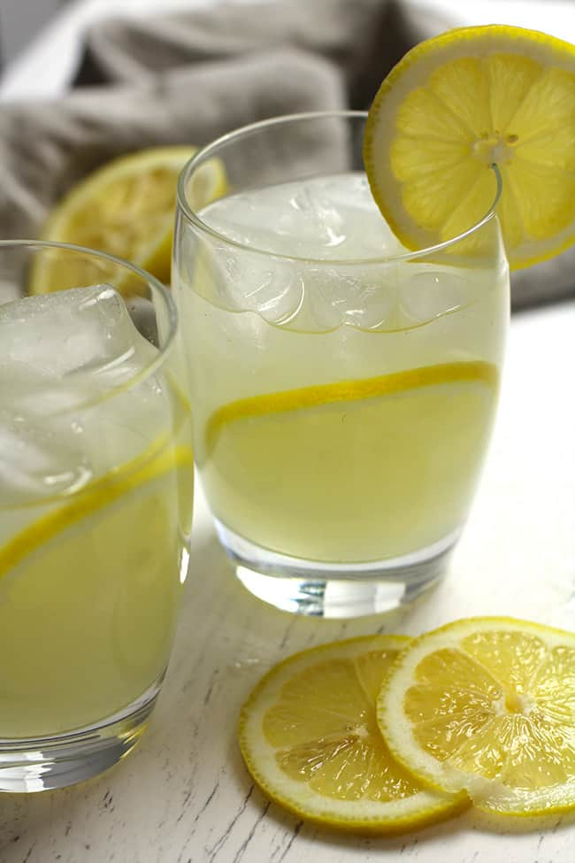

Limoncello

Description
This is a fun twist on the classic Moscow Mule, using limoncello
for a refreshing, lemony summertime cocktail. Use a good-quality ginger
beer, such as Fever Tree®. Serves 1.
Ingredients
- 1 cup ice
- ½ fluid ounce fresh lime juice
- 1 ½ fluid ounces limoncello liqueur
- 1 ½ fluid ounces vodka
- 5 ounces ginger beer
- 1 thin lemon slice (optional)
Steps
-
Fill a copper mule mug with ice. Add lime juice, limoncello, and vodka;
stir to combine. Top with ginger beer. Lightly stir again and garnish
with lemon slice.